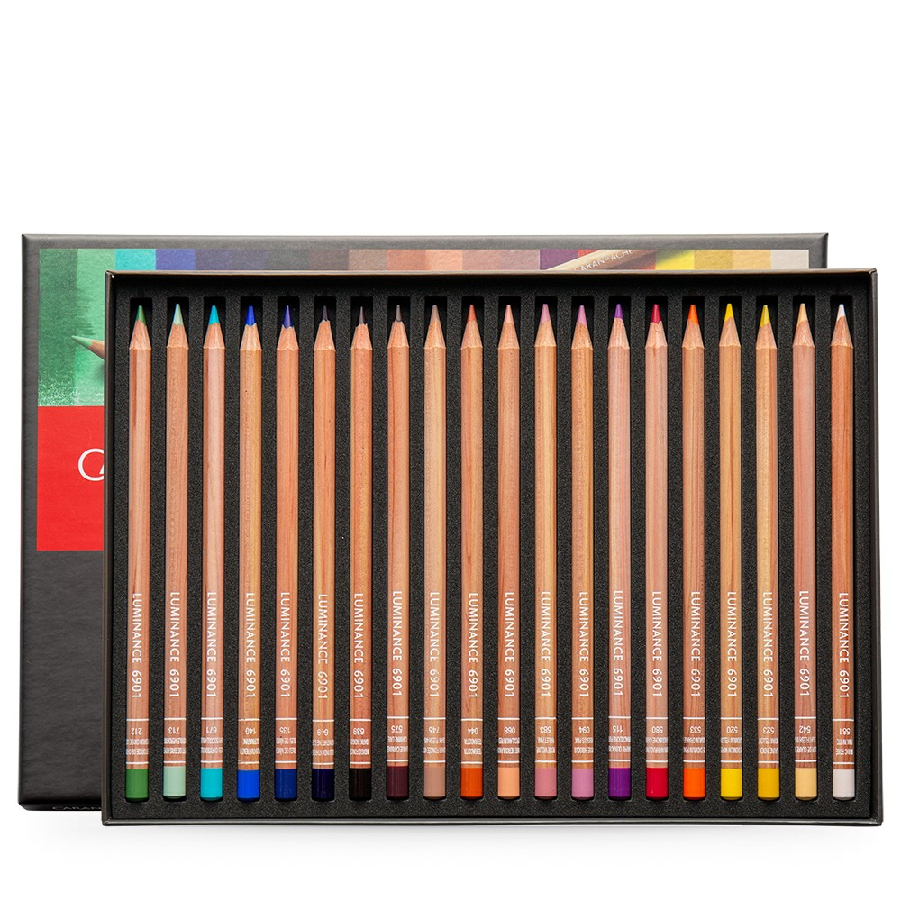
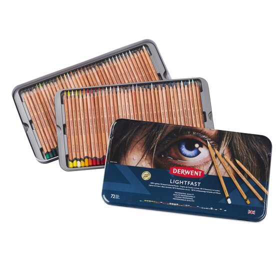
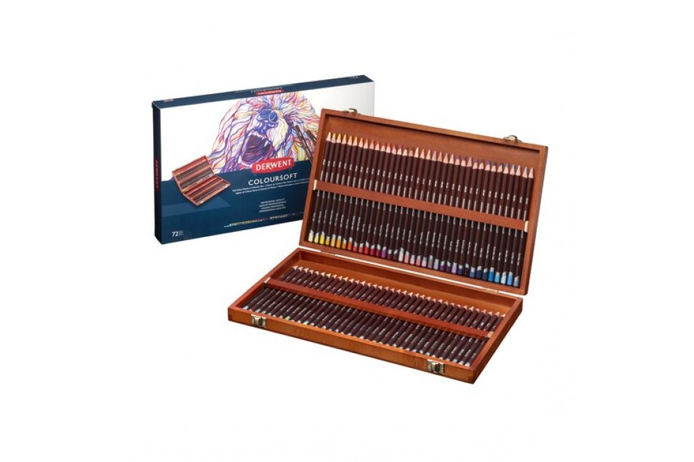
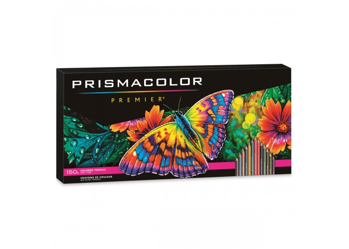

|  |
🔹Имеет мягкий гладкий и прочный грифель толщиной 3,8 мм, который является водостойким, имеет максимальную укрывистость и высокую концентрацию пигмента для ярких и насыщенных цветов. 🔹Может использоваться как художниками, так и профессионалами в области творчества при высоких требованиях. 🔹Карандаши сделаны из лучшего кедра круглого сечения, а конец заклеен в тот же цвет, что и грифель. Они также отмечены названием цвета и кодом для удобства использования. 🔹Вы можете использовать эти карандаши для многих техник. Гладкий грифель рекомендуется для смешивания и градации, растушевки, а также растушевки и полировки белым карандашом. 🔹Эти карандаши представлены в прочной картонной коробке, в которой удобно хранить карандаши, когда они не используются. |
|  | 🔹Цветные карандаши Derwent Lighfast на масляной основе для профессиональных художников. 🔹Все цвета серии имеют максимальный уровень светостойкости - гарантия сохранности и неизменности цвета более 100 лет (по стандартам Blue Wool Scale ISO 105 и ASTM D6901). 🔹Двойная проклейка карандаша по всей длине. 🔹Диаметр грифеля карандаша 4мм. Диаметр карандаша 8мм. 🔹За счет высокого уровня содержания пигментов цвета яркие, насыщенные и укрывистые. 🔹Карандаши мягко и равномерно ложатся на бумагу, при этом кончик карандаша долго сохраняет остроту. 🔹Можно использовать совместно с масляными красками и медиумами для масляных красок, чтобы создавать эффекты. свойственные масляной живописи. |
|  |
🔹Цветные карандаши серии Coloursoft от Derwent самые мягкие цветные карандаши, их цветовой диапазон содержит удивительно богатую яркую палитру. Превосходная бархатная мягкость штрихов, очень плотный и действительно богатый цвет дают возможность перемешивать и смешивать разнообразные оттенки до получения желаемого оттенка. Грифели цветных карандашей серии Coloursoft затачиваются до точки, даже, несмотря на свою мягкую структуру. Эти превосходные карандаши замечательно подходят для портретной живописи, для детальных иллюстраций, для самых смелых современных рисунков натюрморта. Карандаши имеют самые разнообразные цвета, но одинаковую мягкость и фактуру. 🔹Гамма 72 цвета, наборы в металлических пеналах 12, 24, 36 и 72 цвета, в деревянных пеналах 48 и 72 цвета. 🔹Производятся цветные карандаши этой торговой марки на территории Великобритании компанией Derwent (Дервент). |
|  | 🔹Мягкие, толстые стержни идеально подходят для штриховки и создания теней 🔹Светостойкие, насыщенные пигменты. 🔹Ультра гладкое, равномерное нанесение цвета 🔹Толстые и прочные грифели устойчивы к растрескиванию и сколам 🔹150 цветных карандашей премиум-класса |